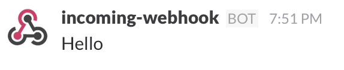
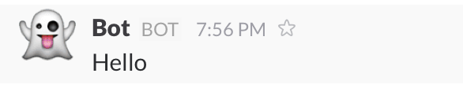
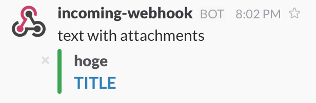

CrystalでSlackに通知を送る
SlackにはAPIが備わっており，APIを使えば簡単にSlackに 通知を送ることが出来ます．
今回はIncoming WebHooks APIを使ってCrystalでSlackに通知を送る方法を紹介します．
手順としては次のようになります．
- Webhook URLの発行
- Wbehook URLに対してpostする
1. Webhook URLの発行
まずWebhook URLを発行します．
Slackのアプリケーションから通知を送りたいチームの設定の Apps & Custom Integrations を開きます．
まだチームに追加していない場合はIncoming WebHooksをチームに追加しましょう．
Incoming WebHooksの設定ページで ｢Add Configuration｣ ボタンを押し， 通知を送りたいチャンネルを選択することでWebhook URLが発行できます．
2. Webhook URLに対してpostする
Slackに通知を送るには拙作のslack-incoming-webhooksを使います．
インストール
shard.ymlのdependenciesに以下を追加してください．
slack-incoming-webhooks:
github: CastellaFactory/slack-incoming-webhooks
branch: master
追加できたら
shards install
もしくは
crystal deps
でインストールできます．
簡単な使い方
require "slack-incoming-webhooks"
slack = Slack::IncomingWebhooks.new "Your WEBHOOK_URL"
slack.post "Hello"

また，通知を送るチャンネルやユーザ名，アイコンの絵文字なども指定することが出来ます．
slack = Slack::IncomingWebhooks.new "Your WEBHOOK_URL", channel: "#hoge",
username: "Bot",
icon_emoji: ":ghost:"

指定できるオプションはこちらを参照してください．
Attachments
attachmentsを使うことで， よりリッチなフォーマットのテキストを送ることが出来ます．
require "slack-incoming-webhooks"
slack = Slack::IncomingWebhooks.new "Your WEBHOOK_URL"
attachment = Slack::Attachment.new author_name: "hoge",
color: "#36a64f",
title: "TITLE",
title_link: "https://www.google.com"
slack.post "text with attachments", attachments: [attachment]

指定できるオプションはこちらを参照してください．
所感
初めてのCrystalでしたが， ドキュメントを読みながらなんとか動くところまでいけました．
(なぜかRubyではなくCrystalから入ってしまった)
Crystal(やRuby)のことを分かっていないので，良くない点が多々あるとは思います．
“ここがよくない”
“ここはこうしたほうが良い”
など，コメントがありましたら CastellaFactory/slack-incoming-webhooksまでお願いします．